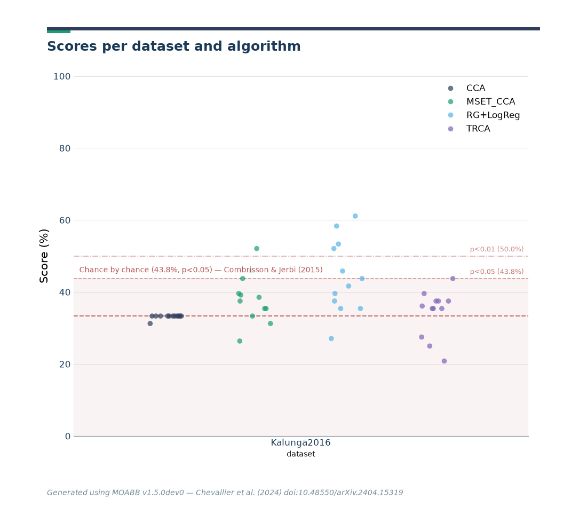

Note
Go to the end to download the full example code.
Cross-Subject SSVEP#
This example shows how to perform a cross-subject analysis on an SSVEP dataset. We will compare four pipelines :
Riemannian Geometry
CCA
TRCA
MsetCCA
We will use the SSVEP paradigm, which uses the AUC as metric.
# Authors: Sylvain Chevallier <sylvain.chevallier@uvsq.fr>
#
# License: BSD (3-clause)
import warnings
import matplotlib.pyplot as plt
import pandas as pd
from pyriemann.estimation import Covariances
from pyriemann.tangentspace import TangentSpace
from sklearn.linear_model import LogisticRegression
from sklearn.pipeline import make_pipeline
import moabb
import moabb.analysis.plotting as moabb_plt
from moabb.analysis.chance_level import chance_by_chance
from moabb.datasets import Kalunga2016
from moabb.evaluations import CrossSubjectEvaluation
from moabb.paradigms import SSVEP, FilterBankSSVEP
from moabb.pipelines import SSVEP_CCA, SSVEP_TRCA, ExtendedSSVEPSignal, SSVEP_MsetCCA
warnings.simplefilter(action="ignore", category=FutureWarning)
warnings.simplefilter(action="ignore", category=RuntimeWarning)
moabb.set_log_level("info")
Loading Dataset#
We will load the data from all 12 subjects of the SSVEP_Exo dataset
and compare four algorithms on this set. One of the algorithms could only
process class associated with a stimulation frequency, we will thus drop
the resting class. As the resting class is the last defined class, picking
the first three classes (out of four) allows to focus only on the stimulation
frequency.
Choose Paradigm#
We define the paradigms (SSVEP, SSVEP TRCA, SSVEP MsetCCA, and FilterBankSSVEP) and
use the dataset Kalunga2016. All 3 SSVEP paradigms applied a bandpass filter (10-42 Hz) on
the data, which include all stimuli frequencies and their first harmonics,
while the FilterBankSSVEP paradigm uses as many bandpass filters as
there are stimulation frequencies (here 3). For each stimulation frequency
the EEG is filtered with a 1 Hz-wide bandpass filter centered on the
frequency. This results in n_classes copies of the signal, filtered for each
class, as used in the filterbank motor imagery paradigms.
paradigm = SSVEP(fmin=10, fmax=42, n_classes=3)
paradigm_TRCA = SSVEP(fmin=10, fmax=42, n_classes=3)
paradigm_MSET_CCA = SSVEP(fmin=10, fmax=42, n_classes=3)
paradigm_fb = FilterBankSSVEP(filters=None, n_classes=3)
Classes are defined by the frequency of the stimulation, here we use the first three frequencies of the dataset, 13, 17, and 21 Hz. The evaluation function uses a LabelEncoder, transforming them to 0, 1, and 2.
Create Pipelines#
Pipelines must be a dict of sklearn pipeline transformer. The first pipeline uses Riemannian geometry, by building an extended covariance matrices from the signal filtered around the considered frequency and applying a logistic regression in the tangent plane. The second pipeline relies on the above defined CCA classifier. The third pipeline relies on the TRCA algorithm, and the fourth uses the MsetCCA algorithm. Both CCA based methods (i.e. CCA and MsetCCA) used 3 CCA components.
pipelines_fb = {}
pipelines_fb["RG+LogReg"] = make_pipeline(
ExtendedSSVEPSignal(),
Covariances(estimator="lwf"),
TangentSpace(),
LogisticRegression(solver="lbfgs"),
)
pipelines = {}
pipelines["CCA"] = make_pipeline(SSVEP_CCA(n_harmonics=2))
pipelines_TRCA = {}
pipelines_TRCA["TRCA"] = make_pipeline(SSVEP_TRCA(n_fbands=3))
pipelines_MSET_CCA = {}
pipelines_MSET_CCA["MSET_CCA"] = make_pipeline(SSVEP_MsetCCA())
Evaluation#
The evaluation will return a DataFrame containing an accuracy score for each subject / session of the dataset, and for each pipeline.
Results are saved into the database, so that if you add a new pipeline, it will not run again the evaluation unless a parameter has changed. Results can be overwritten if necessary.
overwrite = True # set to True if we want to overwrite cached results
evaluation = CrossSubjectEvaluation(
paradigm=paradigm, datasets=dataset, overwrite=overwrite
)
results = evaluation.process(pipelines)
0%| | 0.00/2.06M [00:00<?, ?B/s]
1%|▏ | 12.3k/2.06M [00:00<00:21, 94.4kB/s]
2%|▋ | 39.9k/2.06M [00:00<00:11, 179kB/s]
5%|█▋ | 94.2k/2.06M [00:00<00:06, 316kB/s]
6%|██▍ | 131k/2.06M [00:00<00:05, 322kB/s]
10%|███▊ | 200k/2.06M [00:00<00:04, 427kB/s]
13%|█████▏ | 274k/2.06M [00:00<00:03, 512kB/s]
16%|██████▍ | 338k/2.06M [00:00<00:03, 472kB/s]
20%|███████▉ | 418k/2.06M [00:00<00:03, 545kB/s]
27%|██████████▍ | 548k/2.06M [00:01<00:02, 730kB/s]
31%|███████████▉ | 630k/2.06M [00:01<00:01, 736kB/s]
35%|█████████████▊ | 728k/2.06M [00:01<00:01, 783kB/s]
40%|███████████████▋ | 826k/2.06M [00:01<00:01, 816kB/s]
44%|█████████████████▎ | 909k/2.06M [00:01<00:01, 798kB/s]
51%|███████████████████▌ | 1.05M/2.06M [00:01<00:01, 955kB/s]
56%|█████████████████████▎ | 1.15M/2.06M [00:01<00:00, 931kB/s]
61%|███████████████████████ | 1.25M/2.06M [00:01<00:00, 909kB/s]
65%|████████████████████████▋ | 1.34M/2.06M [00:01<00:00, 889kB/s]
69%|██████████████████████████▎ | 1.43M/2.06M [00:02<00:00, 865kB/s]
74%|███████████████████████████▉ | 1.51M/2.06M [00:02<00:00, 842kB/s]
78%|█████████████████████████████▌ | 1.60M/2.06M [00:02<00:00, 821kB/s]
82%|███████████████████████████████▎ | 1.69M/2.06M [00:02<00:00, 832kB/s]
90%|█████████████████████████████████▍ | 1.86M/2.06M [00:02<00:00, 1.03MB/s]
95%|███████████████████████████████████▎ | 1.96M/2.06M [00:02<00:00, 1.00MB/s]
0%| | 0.00/2.06M [00:00<?, ?B/s]
100%|█████████████████████████████████████| 2.06M/2.06M [00:00<00:00, 12.1GB/s]
0%| | 0.00/2.82M [00:00<?, ?B/s]
0%|▏ | 12.3k/2.82M [00:00<00:33, 84.1kB/s]
1%|▌ | 37.9k/2.82M [00:00<00:17, 159kB/s]
3%|█▎ | 93.2k/2.82M [00:00<00:08, 303kB/s]
6%|██▍ | 176k/2.82M [00:00<00:05, 468kB/s]
8%|███▏ | 229k/2.82M [00:00<00:05, 471kB/s]
10%|███▉ | 281k/2.82M [00:00<00:05, 464kB/s]
13%|████▉ | 360k/2.82M [00:00<00:04, 542kB/s]
15%|██████ | 435k/2.82M [00:00<00:04, 580kB/s]
18%|██████▊ | 495k/2.82M [00:01<00:04, 559kB/s]
21%|████████▏ | 593k/2.82M [00:01<00:03, 650kB/s]
25%|█████████▊ | 707k/2.82M [00:01<00:02, 757kB/s]
28%|██████████▉ | 788k/2.82M [00:01<00:02, 750kB/s]
31%|████████████▎ | 887k/2.82M [00:01<00:02, 789kB/s]
34%|█████████████▍ | 969k/2.82M [00:01<00:02, 773kB/s]
38%|██████████████▌ | 1.08M/2.82M [00:01<00:02, 849kB/s]
43%|████████████████▏ | 1.20M/2.82M [00:01<00:01, 902kB/s]
46%|█████████████████▍ | 1.29M/2.82M [00:01<00:01, 875kB/s]
51%|███████████████████▎ | 1.43M/2.82M [00:02<00:01, 986kB/s]
54%|████████████████████▌ | 1.53M/2.82M [00:02<00:01, 957kB/s]
58%|██████████████████████▏ | 1.64M/2.82M [00:02<00:01, 976kB/s]
62%|███████████████████████▍ | 1.74M/2.82M [00:02<00:01, 947kB/s]
66%|████████████████████████▉ | 1.85M/2.82M [00:02<00:00, 969kB/s]
70%|██████████████████████████▌ | 1.97M/2.82M [00:02<00:00, 987kB/s]
76%|████████████████████████████▏ | 2.15M/2.82M [00:02<00:00, 1.18MB/s]
80%|█████████████████████████████▊ | 2.26M/2.82M [00:02<00:00, 1.14MB/s]
84%|███████████████████████████████▎ | 2.38M/2.82M [00:02<00:00, 1.10MB/s]
88%|████████████████████████████████▋ | 2.49M/2.82M [00:03<00:00, 1.04MB/s]
92%|██████████████████████████████████▏ | 2.60M/2.82M [00:03<00:00, 1.01MB/s]
96%|████████████████████████████████████▌ | 2.71M/2.82M [00:03<00:00, 975kB/s]
0%| | 0.00/2.82M [00:00<?, ?B/s]
100%|█████████████████████████████████████| 2.82M/2.82M [00:00<00:00, 16.4GB/s]
0%| | 0.00/2.58M [00:00<?, ?B/s]
0%|▏ | 12.3k/2.58M [00:00<00:28, 90.1kB/s]
2%|▌ | 39.9k/2.58M [00:00<00:14, 175kB/s]
4%|█▍ | 94.2k/2.58M [00:00<00:08, 311kB/s]
6%|██▍ | 161k/2.58M [00:00<00:05, 420kB/s]
8%|███▏ | 215k/2.58M [00:00<00:05, 443kB/s]
12%|████▋ | 311k/2.58M [00:00<00:03, 583kB/s]
15%|█████▋ | 375k/2.58M [00:00<00:03, 578kB/s]
18%|██████▉ | 458k/2.58M [00:00<00:03, 629kB/s]
22%|████████▌ | 571k/2.58M [00:01<00:02, 747kB/s]
25%|█████████▊ | 647k/2.58M [00:01<00:02, 725kB/s]
28%|███████████ | 735k/2.58M [00:01<00:02, 743kB/s]
32%|████████████▎ | 817k/2.58M [00:01<00:02, 739kB/s]
37%|██████████████▌ | 965k/2.58M [00:01<00:01, 911kB/s]
41%|███████████████▌ | 1.06M/2.58M [00:01<00:01, 877kB/s]
44%|████████████████▊ | 1.14M/2.58M [00:01<00:01, 833kB/s]
49%|██████████████████▌ | 1.26M/2.58M [00:01<00:01, 890kB/s]
53%|███████████████████▉ | 1.36M/2.58M [00:01<00:01, 886kB/s]
56%|█████████████████████▍ | 1.46M/2.58M [00:02<00:01, 881kB/s]
60%|██████████████████████▋ | 1.54M/2.58M [00:02<00:01, 854kB/s]
64%|████████████████████████▎ | 1.65M/2.58M [00:02<00:01, 883kB/s]
69%|██████████████████████████▏ | 1.78M/2.58M [00:02<00:00, 967kB/s]
74%|███████████████████████████▍ | 1.91M/2.58M [00:02<00:00, 1.03MB/s]
80%|█████████████████████████████▋ | 2.08M/2.58M [00:02<00:00, 1.15MB/s]
86%|███████████████████████████████▊ | 2.22M/2.58M [00:02<00:00, 1.20MB/s]
91%|█████████████████████████████████▌ | 2.34M/2.58M [00:02<00:00, 1.16MB/s]
95%|███████████████████████████████████▏ | 2.46M/2.58M [00:02<00:00, 1.12MB/s]
100%|████████████████████████████████████▊| 2.57M/2.58M [00:03<00:00, 1.09MB/s]
0%| | 0.00/2.58M [00:00<?, ?B/s]
100%|█████████████████████████████████████| 2.58M/2.58M [00:00<00:00, 19.0GB/s]
0%| | 0.00/2.14M [00:00<?, ?B/s]
1%|▏ | 12.3k/2.14M [00:00<00:23, 89.6kB/s]
2%|▋ | 41.0k/2.14M [00:00<00:11, 178kB/s]
4%|█▌ | 86.0k/2.14M [00:00<00:07, 273kB/s]
7%|██▌ | 142k/2.14M [00:00<00:05, 359kB/s]
10%|███▉ | 213k/2.14M [00:00<00:04, 451kB/s]
14%|█████▍ | 302k/2.14M [00:00<00:03, 561kB/s]
18%|██████▊ | 377k/2.14M [00:00<00:02, 592kB/s]
22%|████████▍ | 466k/2.14M [00:00<00:02, 653kB/s]
26%|██████████▎ | 564k/2.14M [00:01<00:02, 715kB/s]
31%|████████████ | 663k/2.14M [00:01<00:01, 755kB/s]
35%|█████████████▌ | 744k/2.14M [00:01<00:01, 741kB/s]
39%|███████████████ | 825k/2.14M [00:01<00:01, 732kB/s]
42%|████████████████▎ | 899k/2.14M [00:01<00:01, 705kB/s]
46%|██████████████████ | 989k/2.14M [00:01<00:01, 729kB/s]
52%|███████████████████▊ | 1.12M/2.14M [00:01<00:01, 854kB/s]
57%|█████████████████████▌ | 1.22M/2.14M [00:01<00:01, 855kB/s]
61%|███████████████████████▎ | 1.32M/2.14M [00:01<00:00, 856kB/s]
68%|█████████████████████████▉ | 1.46M/2.14M [00:02<00:00, 982kB/s]
73%|███████████████████████████▋ | 1.56M/2.14M [00:02<00:00, 947kB/s]
77%|█████████████████████████████▍ | 1.66M/2.14M [00:02<00:00, 911kB/s]
82%|██████████████████████████████▉ | 1.75M/2.14M [00:02<00:00, 876kB/s]
87%|████████████████████████████████▉ | 1.86M/2.14M [00:02<00:00, 896kB/s]
91%|██████████████████████████████████▌ | 1.95M/2.14M [00:02<00:00, 862kB/s]
95%|████████████████████████████████████ | 2.03M/2.14M [00:02<00:00, 830kB/s]
99%|█████████████████████████████████████▌| 2.12M/2.14M [00:02<00:00, 803kB/s]
0%| | 0.00/2.14M [00:00<?, ?B/s]
100%|█████████████████████████████████████| 2.14M/2.14M [00:00<00:00, 10.2GB/s]
0%| | 0.00/2.27M [00:00<?, ?B/s]
1%|▏ | 12.3k/2.27M [00:00<00:23, 95.5kB/s]
1%|▍ | 28.7k/2.27M [00:00<00:18, 123kB/s]
4%|█▌ | 95.2k/2.27M [00:00<00:06, 330kB/s]
6%|██▏ | 129k/2.27M [00:00<00:06, 318kB/s]
9%|███▌ | 208k/2.27M [00:00<00:04, 452kB/s]
15%|█████▊ | 338k/2.27M [00:00<00:02, 688kB/s]
18%|███████▏ | 420k/2.27M [00:00<00:02, 700kB/s]
24%|█████████▏ | 535k/2.27M [00:00<00:02, 795kB/s]
30%|███████████▋ | 682k/2.27M [00:01<00:01, 951kB/s]
36%|█████████████▌ | 813k/2.27M [00:01<00:01, 1.01MB/s]
40%|███████████████▋ | 914k/2.27M [00:01<00:01, 975kB/s]
47%|█████████████████▏ | 1.06M/2.27M [00:01<00:01, 1.06MB/s]
52%|███████████████████ | 1.17M/2.27M [00:01<00:01, 1.04MB/s]
57%|████████████████████▉ | 1.29M/2.27M [00:01<00:00, 1.03MB/s]
62%|██████████████████████▊ | 1.40M/2.27M [00:01<00:00, 1.02MB/s]
66%|█████████████████████████▏ | 1.50M/2.27M [00:01<00:00, 986kB/s]
71%|██████████████████████████▉ | 1.61M/2.27M [00:01<00:00, 983kB/s]
75%|████████████████████████████▋ | 1.71M/2.27M [00:02<00:00, 947kB/s]
80%|██████████████████████████████▏ | 1.81M/2.27M [00:02<00:00, 913kB/s]
84%|███████████████████████████████▊ | 1.90M/2.27M [00:02<00:00, 883kB/s]
88%|█████████████████████████████████▎ | 1.99M/2.27M [00:02<00:00, 856kB/s]
94%|███████████████████████████████████▋ | 2.14M/2.27M [00:02<00:00, 988kB/s]
99%|█████████████████████████████████████▋| 2.25M/2.27M [00:02<00:00, 994kB/s]
0%| | 0.00/2.27M [00:00<?, ?B/s]
100%|█████████████████████████████████████| 2.27M/2.27M [00:00<00:00, 13.8GB/s]
0%| | 0.00/2.13M [00:00<?, ?B/s]
0%|▏ | 9.22k/2.13M [00:00<00:32, 65.2kB/s]
2%|▌ | 32.8k/2.13M [00:00<00:14, 143kB/s]
4%|█▌ | 88.1k/2.13M [00:00<00:06, 295kB/s]
6%|██▎ | 129k/2.13M [00:00<00:06, 323kB/s]
11%|████▏ | 228k/2.13M [00:00<00:03, 522kB/s]
14%|█████▍ | 297k/2.13M [00:00<00:03, 553kB/s]
19%|███████▎ | 399k/2.13M [00:00<00:02, 671kB/s]
23%|█████████ | 494k/2.13M [00:00<00:02, 725kB/s]
27%|██████████▌ | 575k/2.13M [00:01<00:02, 727kB/s]
31%|████████████ | 657k/2.13M [00:01<00:02, 729kB/s]
35%|█████████████▌ | 739k/2.13M [00:01<00:01, 729kB/s]
40%|███████████████▋ | 853k/2.13M [00:01<00:01, 818kB/s]
45%|█████████████████▋ | 968k/2.13M [00:01<00:01, 879kB/s]
51%|███████████████████▎ | 1.08M/2.13M [00:01<00:01, 923kB/s]
56%|█████████████████████▍ | 1.20M/2.13M [00:01<00:00, 955kB/s]
62%|███████████████████████▍ | 1.31M/2.13M [00:01<00:00, 976kB/s]
67%|█████████████████████████▍ | 1.43M/2.13M [00:01<00:00, 989kB/s]
72%|██████████████████████████▊ | 1.54M/2.13M [00:02<00:00, 1.00MB/s]
78%|████████████████████████████▊ | 1.65M/2.13M [00:02<00:00, 1.01MB/s]
84%|███████████████████████████████ | 1.79M/2.13M [00:02<00:00, 1.05MB/s]
89%|████████████████████████████████▉ | 1.89M/2.13M [00:02<00:00, 1.02MB/s]
94%|███████████████████████████████████▌ | 1.99M/2.13M [00:02<00:00, 984kB/s]
98%|█████████████████████████████████████▍| 2.09M/2.13M [00:02<00:00, 956kB/s]
0%| | 0.00/2.13M [00:00<?, ?B/s]
100%|█████████████████████████████████████| 2.13M/2.13M [00:00<00:00, 16.3GB/s]
0%| | 0.00/2.29M [00:00<?, ?B/s]
0%| | 1.02k/2.29M [00:00<04:29, 8.52kB/s]
2%|▋ | 41.0k/2.29M [00:00<00:10, 210kB/s]
4%|█▍ | 90.1k/2.29M [00:00<00:06, 317kB/s]
6%|██▍ | 140k/2.29M [00:00<00:05, 373kB/s]
9%|███▍ | 201k/2.29M [00:00<00:04, 436kB/s]
11%|████▍ | 262k/2.29M [00:00<00:04, 479kB/s]
15%|█████▋ | 336k/2.29M [00:00<00:03, 542kB/s]
19%|███████▍ | 434k/2.29M [00:00<00:02, 656kB/s]
22%|████████▌ | 501k/2.29M [00:00<00:02, 641kB/s]
26%|█████████▉ | 587k/2.29M [00:01<00:02, 686kB/s]
30%|███████████▋ | 685k/2.29M [00:01<00:02, 750kB/s]
34%|█████████████▎ | 783k/2.29M [00:01<00:01, 792kB/s]
40%|███████████████▌ | 914k/2.29M [00:01<00:01, 913kB/s]
44%|████████████████▊ | 1.01M/2.29M [00:01<00:01, 904kB/s]
51%|██████████████████▉ | 1.18M/2.29M [00:01<00:01, 1.08MB/s]
57%|█████████████████████ | 1.31M/2.29M [00:01<00:00, 1.11MB/s]
62%|██████████████████████▊ | 1.42M/2.29M [00:01<00:00, 1.08MB/s]
66%|████████████████████████▌ | 1.52M/2.29M [00:01<00:00, 1.04MB/s]
71%|██████████████████████████▎ | 1.63M/2.29M [00:02<00:00, 1.02MB/s]
75%|████████████████████████████▋ | 1.73M/2.29M [00:02<00:00, 990kB/s]
80%|██████████████████████████████▎ | 1.83M/2.29M [00:02<00:00, 962kB/s]
84%|███████████████████████████████▉ | 1.93M/2.29M [00:02<00:00, 930kB/s]
88%|█████████████████████████████████▌ | 2.03M/2.29M [00:02<00:00, 925kB/s]
93%|███████████████████████████████████▏ | 2.12M/2.29M [00:02<00:00, 915kB/s]
98%|█████████████████████████████████████ | 2.24M/2.29M [00:02<00:00, 954kB/s]
0%| | 0.00/2.29M [00:00<?, ?B/s]
100%|█████████████████████████████████████| 2.29M/2.29M [00:00<00:00, 16.3GB/s]
0%| | 0.00/2.06M [00:00<?, ?B/s]
0%|▏ | 10.2k/2.06M [00:00<00:28, 71.7kB/s]
2%|▌ | 31.7k/2.06M [00:00<00:15, 134kB/s]
5%|█▊ | 98.3k/2.06M [00:00<00:05, 329kB/s]
9%|███▎ | 175k/2.06M [00:00<00:04, 461kB/s]
11%|████▎ | 230k/2.06M [00:00<00:03, 470kB/s]
14%|█████▍ | 286k/2.06M [00:00<00:03, 474kB/s]
18%|██████▉ | 368k/2.06M [00:00<00:03, 554kB/s]
22%|████████▍ | 446k/2.06M [00:00<00:02, 597kB/s]
26%|██████████ | 528k/2.06M [00:01<00:02, 634kB/s]
30%|███████████▊ | 627k/2.06M [00:01<00:02, 704kB/s]
35%|█████████████▋ | 725k/2.06M [00:01<00:01, 753kB/s]
39%|███████████████▏ | 801k/2.06M [00:01<00:01, 726kB/s]
44%|█████████████████▏ | 905k/2.06M [00:01<00:01, 783kB/s]
48%|██████████████████▋ | 986k/2.06M [00:01<00:01, 760kB/s]
53%|████████████████████ | 1.08M/2.06M [00:01<00:01, 790kB/s]
57%|█████████████████████▌ | 1.17M/2.06M [00:01<00:01, 767kB/s]
61%|███████████████████████ | 1.25M/2.06M [00:01<00:01, 751kB/s]
65%|████████████████████████▊ | 1.35M/2.06M [00:02<00:00, 784kB/s]
72%|███████████████████████████▎ | 1.48M/2.06M [00:02<00:00, 890kB/s]
79%|█████████████████████████████▏ | 1.62M/2.06M [00:02<00:00, 1.01MB/s]
84%|███████████████████████████████▏ | 1.74M/2.06M [00:02<00:00, 1.01MB/s]
90%|█████████████████████████████████▎ | 1.85M/2.06M [00:02<00:00, 1.01MB/s]
95%|████████████████████████████████████ | 1.95M/2.06M [00:02<00:00, 970kB/s]
100%|█████████████████████████████████████▉| 2.05M/2.06M [00:02<00:00, 929kB/s]
0%| | 0.00/2.06M [00:00<?, ?B/s]
100%|█████████████████████████████████████| 2.06M/2.06M [00:00<00:00, 14.2GB/s]
0%| | 0.00/2.12M [00:00<?, ?B/s]
0%| | 5.12k/2.12M [00:00<00:57, 37.0kB/s]
2%|▋ | 41.0k/2.12M [00:00<00:11, 188kB/s]
4%|█▌ | 88.1k/2.12M [00:00<00:07, 290kB/s]
6%|██▌ | 136k/2.12M [00:00<00:05, 344kB/s]
10%|███▊ | 206k/2.12M [00:00<00:04, 441kB/s]
14%|█████▎ | 287k/2.12M [00:00<00:03, 536kB/s]
16%|██████▎ | 342k/2.12M [00:00<00:03, 523kB/s]
20%|███████▉ | 433k/2.12M [00:00<00:02, 614kB/s]
24%|█████████▍ | 514k/2.12M [00:01<00:02, 649kB/s]
27%|██████████▋ | 580k/2.12M [00:01<00:02, 628kB/s]
31%|████████████▏ | 662k/2.12M [00:01<00:02, 658kB/s]
36%|█████████████▉ | 760k/2.12M [00:01<00:01, 724kB/s]
42%|████████████████▍ | 891k/2.12M [00:01<00:01, 857kB/s]
48%|██████████████████▎ | 1.02M/2.12M [00:01<00:01, 946kB/s]
53%|████████████████████ | 1.12M/2.12M [00:01<00:01, 924kB/s]
60%|██████████████████████ | 1.27M/2.12M [00:01<00:00, 1.04MB/s]
65%|███████████████████████▉ | 1.37M/2.12M [00:01<00:00, 1.01MB/s]
69%|██████████████████████████▍ | 1.47M/2.12M [00:02<00:00, 975kB/s]
74%|████████████████████████████▏ | 1.57M/2.12M [00:02<00:00, 943kB/s]
79%|█████████████████████████████▊ | 1.67M/2.12M [00:02<00:00, 915kB/s]
83%|███████████████████████████████▌ | 1.76M/2.12M [00:02<00:00, 887kB/s]
87%|█████████████████████████████████ | 1.85M/2.12M [00:02<00:00, 858kB/s]
93%|███████████████████████████████████▎ | 1.97M/2.12M [00:02<00:00, 924kB/s]
0%| | 0.00/2.12M [00:00<?, ?B/s]
100%|█████████████████████████████████████| 2.12M/2.12M [00:00<00:00, 13.0GB/s]
0%| | 0.00/2.47M [00:00<?, ?B/s]
0%|▏ | 12.3k/2.47M [00:00<00:25, 95.5kB/s]
1%|▍ | 30.7k/2.47M [00:00<00:18, 134kB/s]
4%|█▍ | 94.2k/2.47M [00:00<00:07, 327kB/s]
6%|██▏ | 136k/2.47M [00:00<00:06, 346kB/s]
9%|███▎ | 213k/2.47M [00:00<00:04, 467kB/s]
12%|████▌ | 290k/2.47M [00:00<00:04, 542kB/s]
16%|██████▏ | 391k/2.47M [00:00<00:03, 660kB/s]
19%|███████▍ | 473k/2.47M [00:00<00:02, 683kB/s]
22%|████████▌ | 542k/2.47M [00:01<00:02, 661kB/s]
25%|█████████▌ | 608k/2.47M [00:01<00:02, 639kB/s]
30%|███████████▊ | 752k/2.47M [00:01<00:02, 834kB/s]
34%|█████████████▏ | 836k/2.47M [00:01<00:02, 809kB/s]
38%|██████████████▋ | 931k/2.47M [00:01<00:01, 821kB/s]
41%|███████████████▌ | 1.01M/2.47M [00:01<00:01, 796kB/s]
47%|█████████████████▊ | 1.16M/2.47M [00:01<00:01, 949kB/s]
51%|███████████████████▎ | 1.26M/2.47M [00:01<00:01, 919kB/s]
55%|████████████████████▋ | 1.35M/2.47M [00:01<00:01, 885kB/s]
59%|██████████████████████▎ | 1.45M/2.47M [00:02<00:01, 906kB/s]
63%|████████████████████████ | 1.57M/2.47M [00:02<00:00, 941kB/s]
68%|█████████████████████████▉ | 1.68M/2.47M [00:02<00:00, 966kB/s]
72%|███████████████████████████▍ | 1.78M/2.47M [00:02<00:00, 939kB/s]
76%|████████████████████████████▉ | 1.88M/2.47M [00:02<00:00, 921kB/s]
80%|██████████████████████████████▍ | 1.98M/2.47M [00:02<00:00, 903kB/s]
86%|███████████████████████████████▊ | 2.12M/2.47M [00:02<00:00, 1.03MB/s]
90%|██████████████████████████████████▎ | 2.23M/2.47M [00:02<00:00, 995kB/s]
95%|███████████████████████████████████▏ | 2.35M/2.47M [00:02<00:00, 1.04MB/s]
99%|████████████████████████████████████▊| 2.46M/2.47M [00:03<00:00, 1.00MB/s]
0%| | 0.00/2.47M [00:00<?, ?B/s]
100%|█████████████████████████████████████| 2.47M/2.47M [00:00<00:00, 17.4GB/s]
0%| | 0.00/2.71M [00:00<?, ?B/s]
0%|▏ | 12.3k/2.71M [00:00<00:28, 94.3kB/s]
1%|▌ | 39.9k/2.71M [00:00<00:14, 181kB/s]
4%|█▎ | 95.2k/2.71M [00:00<00:08, 324kB/s]
5%|██ | 139k/2.71M [00:00<00:07, 354kB/s]
8%|███▏ | 222k/2.71M [00:00<00:05, 498kB/s]
11%|████▎ | 299k/2.71M [00:00<00:04, 565kB/s]
13%|█████ | 356k/2.71M [00:00<00:04, 549kB/s]
16%|██████▏ | 430k/2.71M [00:00<00:03, 588kB/s]
19%|███████▍ | 518k/2.71M [00:01<00:03, 656kB/s]
22%|████████▍ | 585k/2.71M [00:01<00:03, 639kB/s]
25%|█████████▌ | 666k/2.71M [00:01<00:03, 669kB/s]
28%|██████████▋ | 748k/2.71M [00:01<00:02, 692kB/s]
32%|████████████▍ | 861k/2.71M [00:01<00:02, 796kB/s]
35%|█████████████▊ | 959k/2.71M [00:01<00:02, 826kB/s]
38%|██████████████▌ | 1.04M/2.71M [00:01<00:02, 805kB/s]
43%|████████████████▍ | 1.17M/2.71M [00:01<00:01, 921kB/s]
47%|█████████████████▊ | 1.27M/2.71M [00:01<00:01, 908kB/s]
50%|███████████████████ | 1.36M/2.71M [00:01<00:01, 884kB/s]
55%|████████████████████▉ | 1.50M/2.71M [00:02<00:01, 994kB/s]
59%|██████████████████████ | 1.61M/2.71M [00:02<00:01, 1.01MB/s]
64%|███████████████████████▊ | 1.74M/2.71M [00:02<00:00, 1.06MB/s]
69%|█████████████████████████▎ | 1.86M/2.71M [00:02<00:00, 1.06MB/s]
74%|███████████████████████████▎ | 2.01M/2.71M [00:02<00:00, 1.14MB/s]
79%|█████████████████████████████▏ | 2.14M/2.71M [00:02<00:00, 1.15MB/s]
83%|██████████████████████████████▋ | 2.25M/2.71M [00:02<00:00, 1.12MB/s]
87%|████████████████████████████████▎ | 2.37M/2.71M [00:02<00:00, 1.09MB/s]
93%|██████████████████████████████████▎ | 2.51M/2.71M [00:02<00:00, 1.17MB/s]
0%| | 0.00/2.71M [00:00<?, ?B/s]
100%|█████████████████████████████████████| 2.71M/2.71M [00:00<00:00, 14.9GB/s]
0%| | 0.00/2.33M [00:00<?, ?B/s]
1%|▏ | 12.3k/2.33M [00:00<00:26, 85.9kB/s]
2%|▌ | 36.9k/2.33M [00:00<00:14, 155kB/s]
4%|█▍ | 88.1k/2.33M [00:00<00:07, 282kB/s]
6%|██▏ | 134k/2.33M [00:00<00:06, 329kB/s]
9%|███▌ | 212k/2.33M [00:00<00:04, 454kB/s]
12%|████▋ | 276k/2.33M [00:00<00:04, 492kB/s]
17%|██████▌ | 391k/2.33M [00:00<00:02, 655kB/s]
20%|███████▋ | 458k/2.33M [00:00<00:02, 632kB/s]
24%|█████████▍ | 562k/2.33M [00:01<00:02, 720kB/s]
28%|███████████ | 660k/2.33M [00:01<00:02, 762kB/s]
32%|████████████▍ | 742k/2.33M [00:01<00:02, 742kB/s]
36%|██████████████ | 841k/2.33M [00:01<00:01, 777kB/s]
40%|███████████████▍ | 922k/2.33M [00:01<00:01, 755kB/s]
43%|████████████████▍ | 1.00M/2.33M [00:01<00:01, 743kB/s]
49%|██████████████████▊ | 1.15M/2.33M [00:01<00:01, 904kB/s]
53%|████████████████████▎ | 1.24M/2.33M [00:01<00:01, 865kB/s]
59%|██████████████████████▎ | 1.36M/2.33M [00:01<00:01, 923kB/s]
64%|████████████████████████▏ | 1.48M/2.33M [00:02<00:00, 930kB/s]
70%|█████████████████████████▊ | 1.63M/2.33M [00:02<00:00, 1.03MB/s]
75%|███████████████████████████▋ | 1.74M/2.33M [00:02<00:00, 1.02MB/s]
85%|███████████████████████████████▎ | 1.97M/2.33M [00:02<00:00, 1.30MB/s]
90%|█████████████████████████████████▍ | 2.10M/2.33M [00:02<00:00, 1.25MB/s]
96%|███████████████████████████████████▍ | 2.22M/2.33M [00:02<00:00, 1.20MB/s]
0%| | 0.00/2.33M [00:00<?, ?B/s]
100%|█████████████████████████████████████| 2.33M/2.33M [00:00<00:00, 7.77GB/s]
0%| | 0.00/2.27M [00:00<?, ?B/s]
1%|▏ | 12.3k/2.27M [00:00<00:27, 82.8kB/s]
2%|▌ | 36.9k/2.27M [00:00<00:14, 152kB/s]
4%|█▋ | 97.3k/2.27M [00:00<00:06, 313kB/s]
8%|███ | 177k/2.27M [00:00<00:04, 457kB/s]
10%|███▊ | 225k/2.27M [00:00<00:04, 447kB/s]
14%|█████▍ | 318k/2.27M [00:00<00:03, 573kB/s]
17%|██████▊ | 396k/2.27M [00:00<00:03, 609kB/s]
21%|████████▎ | 482k/2.27M [00:00<00:02, 658kB/s]
25%|█████████▋ | 564k/2.27M [00:01<00:02, 677kB/s]
28%|███████████ | 646k/2.27M [00:01<00:02, 694kB/s]
32%|████████████▍ | 728k/2.27M [00:01<00:02, 706kB/s]
36%|██████████████▏ | 825k/2.27M [00:01<00:01, 757kB/s]
40%|███████████████▌ | 907k/2.27M [00:01<00:01, 750kB/s]
44%|████████████████▉ | 989k/2.27M [00:01<00:01, 745kB/s]
49%|██████████████████▍ | 1.10M/2.27M [00:01<00:01, 832kB/s]
53%|████████████████████ | 1.20M/2.27M [00:01<00:01, 848kB/s]
59%|██████████████████████▎ | 1.33M/2.27M [00:01<00:00, 941kB/s]
63%|███████████████████████▉ | 1.43M/2.27M [00:02<00:00, 923kB/s]
68%|█████████████████████████▊ | 1.55M/2.27M [00:02<00:00, 954kB/s]
72%|███████████████████████████▍ | 1.64M/2.27M [00:02<00:00, 927kB/s]
76%|█████████████████████████████ | 1.73M/2.27M [00:02<00:00, 899kB/s]
81%|██████████████████████████████▊ | 1.84M/2.27M [00:02<00:00, 909kB/s]
85%|████████████████████████████████▍ | 1.94M/2.27M [00:02<00:00, 901kB/s]
89%|█████████████████████████████████▉ | 2.03M/2.27M [00:02<00:00, 872kB/s]
94%|███████████████████████████████████▋ | 2.13M/2.27M [00:02<00:00, 896kB/s]
98%|█████████████████████████████████████▎| 2.23M/2.27M [00:02<00:00, 884kB/s]
0%| | 0.00/2.27M [00:00<?, ?B/s]
100%|█████████████████████████████████████| 2.27M/2.27M [00:00<00:00, 14.0GB/s]
0%| | 0.00/1.99M [00:00<?, ?B/s]
1%|▏ | 12.3k/1.99M [00:00<00:21, 93.0kB/s]
2%|▊ | 39.9k/1.99M [00:00<00:11, 175kB/s]
4%|█▌ | 82.9k/1.99M [00:00<00:07, 269kB/s]
6%|██▍ | 126k/1.99M [00:00<00:05, 316kB/s]
10%|███▋ | 190k/1.99M [00:00<00:04, 412kB/s]
14%|█████▎ | 271k/1.99M [00:00<00:03, 522kB/s]
18%|██████▉ | 353k/1.99M [00:00<00:02, 596kB/s]
23%|████████▉ | 456k/1.99M [00:00<00:02, 697kB/s]
27%|██████████▌ | 538k/1.99M [00:01<00:02, 712kB/s]
34%|█████████████▍ | 685k/1.99M [00:01<00:01, 906kB/s]
39%|███████████████▏ | 776k/1.99M [00:01<00:01, 882kB/s]
44%|█████████████████▎ | 881k/1.99M [00:01<00:01, 904kB/s]
52%|███████████████████▍ | 1.04M/1.99M [00:01<00:00, 1.08MB/s]
59%|█████████████████████▊ | 1.18M/1.99M [00:01<00:00, 1.12MB/s]
65%|███████████████████████▉ | 1.29M/1.99M [00:01<00:00, 1.09MB/s]
71%|██████████████████████████▍ | 1.42M/1.99M [00:01<00:00, 1.12MB/s]
77%|████████████████████████████▌ | 1.53M/1.99M [00:01<00:00, 1.10MB/s]
83%|██████████████████████████████▌ | 1.65M/1.99M [00:02<00:00, 1.07MB/s]
91%|█████████████████████████████████▋ | 1.81M/1.99M [00:02<00:00, 1.20MB/s]
97%|███████████████████████████████████▉ | 1.93M/1.99M [00:02<00:00, 1.17MB/s]
0%| | 0.00/1.99M [00:00<?, ?B/s]
100%|█████████████████████████████████████| 1.99M/1.99M [00:00<00:00, 12.1GB/s]
0%| | 0.00/2.98M [00:00<?, ?B/s]
0%|▏ | 11.3k/2.98M [00:00<00:34, 86.2kB/s]
1%|▍ | 36.9k/2.98M [00:00<00:17, 165kB/s]
3%|█▏ | 91.1k/2.98M [00:00<00:09, 306kB/s]
6%|██▏ | 170k/2.98M [00:00<00:06, 461kB/s]
8%|███▏ | 245k/2.98M [00:00<00:05, 535kB/s]
10%|███▉ | 299k/2.98M [00:00<00:05, 518kB/s]
13%|████▉ | 376k/2.98M [00:00<00:04, 572kB/s]
17%|██████▌ | 499k/2.98M [00:00<00:03, 738kB/s]
19%|███████▌ | 581k/2.98M [00:01<00:03, 736kB/s]
24%|█████████▎ | 712k/2.98M [00:01<00:02, 867kB/s]
28%|██████████▊ | 825k/2.98M [00:01<00:02, 911kB/s]
32%|████████████▎ | 940k/2.98M [00:01<00:02, 944kB/s]
35%|█████████████▍ | 1.05M/2.98M [00:01<00:01, 967kB/s]
39%|██████████████▋ | 1.15M/2.98M [00:01<00:01, 935kB/s]
42%|███████████████▉ | 1.25M/2.98M [00:01<00:01, 920kB/s]
46%|█████████████████▍ | 1.36M/2.98M [00:01<00:01, 947kB/s]
50%|██████████████████▌ | 1.50M/2.98M [00:01<00:01, 1.02MB/s]
54%|████████████████████▎ | 1.60M/2.98M [00:02<00:01, 972kB/s]
57%|█████████████████████▋ | 1.70M/2.98M [00:02<00:01, 944kB/s]
60%|██████████████████████▊ | 1.79M/2.98M [00:02<00:01, 915kB/s]
63%|████████████████████████ | 1.88M/2.98M [00:02<00:01, 887kB/s]
66%|█████████████████████████▏ | 1.97M/2.98M [00:02<00:01, 860kB/s]
69%|██████████████████████████▏ | 2.06M/2.98M [00:02<00:01, 832kB/s]
72%|███████████████████████████▍ | 2.15M/2.98M [00:02<00:01, 827kB/s]
78%|████████████████████████████▋ | 2.31M/2.98M [00:02<00:00, 1.02MB/s]
81%|██████████████████████████████▊ | 2.42M/2.98M [00:02<00:00, 986kB/s]
84%|████████████████████████████████ | 2.52M/2.98M [00:03<00:00, 954kB/s]
88%|█████████████████████████████████▎ | 2.61M/2.98M [00:03<00:00, 927kB/s]
91%|██████████████████████████████████▍ | 2.71M/2.98M [00:03<00:00, 902kB/s]
94%|███████████████████████████████████▋ | 2.80M/2.98M [00:03<00:00, 874kB/s]
0%| | 0.00/2.98M [00:00<?, ?B/s]
100%|█████████████████████████████████████| 2.98M/2.98M [00:00<00:00, 20.8GB/s]
0%| | 0.00/2.72M [00:00<?, ?B/s]
0%|▏ | 11.3k/2.72M [00:00<00:33, 79.6kB/s]
2%|▌ | 41.0k/2.72M [00:00<00:15, 177kB/s]
3%|█▎ | 90.1k/2.72M [00:00<00:09, 289kB/s]
6%|██▏ | 156k/2.72M [00:00<00:06, 400kB/s]
8%|██▉ | 205k/2.72M [00:00<00:06, 413kB/s]
11%|████ | 287k/2.72M [00:00<00:04, 516kB/s]
14%|█████▌ | 384k/2.72M [00:00<00:03, 627kB/s]
16%|██████▍ | 447k/2.72M [00:00<00:03, 606kB/s]
20%|███████▋ | 531k/2.72M [00:01<00:03, 648kB/s]
24%|█████████▎ | 646k/2.72M [00:01<00:02, 758kB/s]
27%|██████████▋ | 744k/2.72M [00:01<00:02, 792kB/s]
32%|████████████▌ | 874k/2.72M [00:01<00:02, 901kB/s]
36%|█████████████▊ | 966k/2.72M [00:01<00:02, 871kB/s]
39%|██████████████▉ | 1.07M/2.72M [00:01<00:01, 889kB/s]
43%|████████████████▏ | 1.16M/2.72M [00:01<00:01, 856kB/s]
48%|██████████████████▏ | 1.30M/2.72M [00:01<00:01, 969kB/s]
51%|███████████████████▌ | 1.40M/2.72M [00:01<00:01, 934kB/s]
55%|████████████████████▊ | 1.49M/2.72M [00:02<00:01, 903kB/s]
58%|██████████████████████▏ | 1.58M/2.72M [00:02<00:01, 872kB/s]
65%|████████████████████████▏ | 1.77M/2.72M [00:02<00:00, 1.12MB/s]
69%|█████████████████████████▋ | 1.89M/2.72M [00:02<00:00, 1.08MB/s]
76%|███████████████████████████▉ | 2.05M/2.72M [00:02<00:00, 1.19MB/s]
80%|█████████████████████████████▌ | 2.17M/2.72M [00:02<00:00, 1.15MB/s]
85%|███████████████████████████████▌ | 2.31M/2.72M [00:02<00:00, 1.18MB/s]
90%|█████████████████████████████████▏ | 2.43M/2.72M [00:02<00:00, 1.14MB/s]
95%|███████████████████████████████████ | 2.58M/2.72M [00:02<00:00, 1.17MB/s]
99%|████████████████████████████████████▋| 2.69M/2.72M [00:03<00:00, 1.13MB/s]
0%| | 0.00/2.72M [00:00<?, ?B/s]
100%|█████████████████████████████████████| 2.72M/2.72M [00:00<00:00, 16.1GB/s]
0%| | 0.00/2.74M [00:00<?, ?B/s]
0%|▏ | 12.3k/2.74M [00:00<00:29, 93.0kB/s]
1%|▌ | 39.9k/2.74M [00:00<00:15, 178kB/s]
3%|█▎ | 93.2k/2.74M [00:00<00:08, 308kB/s]
5%|██ | 145k/2.74M [00:00<00:07, 368kB/s]
7%|██▋ | 185k/2.74M [00:00<00:07, 361kB/s]
9%|███▎ | 234k/2.74M [00:00<00:06, 388kB/s]
11%|████▎ | 299k/2.74M [00:00<00:05, 449kB/s]
14%|█████▎ | 374k/2.74M [00:00<00:04, 518kB/s]
17%|██████▋ | 472k/2.74M [00:01<00:03, 630kB/s]
21%|████████▏ | 570k/2.74M [00:01<00:03, 706kB/s]
24%|█████████▌ | 669k/2.74M [00:01<00:02, 759kB/s]
27%|██████████▋ | 751k/2.74M [00:01<00:02, 749kB/s]
32%|████████████▌ | 881k/2.74M [00:01<00:02, 875kB/s]
36%|█████████████▉ | 979k/2.74M [00:01<00:02, 875kB/s]
39%|██████████████▉ | 1.08M/2.74M [00:01<00:01, 876kB/s]
43%|████████████████▎ | 1.18M/2.74M [00:01<00:01, 877kB/s]
47%|█████████████████▋ | 1.27M/2.74M [00:01<00:01, 877kB/s]
51%|███████████████████▎ | 1.39M/2.74M [00:02<00:01, 919kB/s]
54%|████████████████████▋ | 1.49M/2.74M [00:02<00:01, 906kB/s]
58%|█████████████████████▉ | 1.58M/2.74M [00:02<00:01, 898kB/s]
62%|███████████████████████▌ | 1.70M/2.74M [00:02<00:01, 935kB/s]
66%|████████████████████████▉ | 1.80M/2.74M [00:02<00:01, 918kB/s]
70%|██████████████████████████▌ | 1.91M/2.74M [00:02<00:00, 947kB/s]
73%|███████████████████████████▉ | 2.01M/2.74M [00:02<00:00, 926kB/s]
77%|█████████████████████████████▏ | 2.10M/2.74M [00:02<00:00, 897kB/s]
80%|██████████████████████████████▍ | 2.19M/2.74M [00:02<00:00, 870kB/s]
85%|████████████████████████████████▍ | 2.34M/2.74M [00:03<00:00, 993kB/s]
89%|█████████████████████████████████▊ | 2.44M/2.74M [00:03<00:00, 963kB/s]
93%|███████████████████████████████████▏ | 2.53M/2.74M [00:03<00:00, 933kB/s]
97%|████████████████████████████████████▉ | 2.66M/2.74M [00:03<00:00, 997kB/s]
0%| | 0.00/2.74M [00:00<?, ?B/s]
100%|█████████████████████████████████████| 2.74M/2.74M [00:00<00:00, 19.6GB/s]
0%| | 0.00/2.74M [00:00<?, ?B/s]
0%| | 1.02k/2.74M [00:00<06:14, 7.30kB/s]
1%|▍ | 34.8k/2.74M [00:00<00:16, 163kB/s]
3%|█▏ | 84.0k/2.74M [00:00<00:09, 280kB/s]
5%|█▉ | 132k/2.74M [00:00<00:07, 335kB/s]
8%|███ | 214k/2.74M [00:00<00:05, 470kB/s]
10%|███▉ | 280k/2.74M [00:00<00:04, 505kB/s]
14%|█████▍ | 378k/2.74M [00:00<00:03, 622kB/s]
16%|██████▎ | 443k/2.74M [00:00<00:03, 607kB/s]
20%|███████▉ | 558k/2.74M [00:01<00:02, 731kB/s]
24%|█████████▎ | 655k/2.74M [00:01<00:02, 768kB/s]
27%|██████████▌ | 737k/2.74M [00:01<00:02, 752kB/s]
30%|███████████▋ | 819k/2.74M [00:01<00:02, 741kB/s]
34%|█████████████ | 918k/2.74M [00:01<00:02, 776kB/s]
37%|██████████████ | 1.02M/2.74M [00:01<00:02, 801kB/s]
40%|███████████████▏ | 1.10M/2.74M [00:01<00:02, 775kB/s]
43%|████████████████▎ | 1.18M/2.74M [00:01<00:02, 755kB/s]
48%|██████████████████▏ | 1.31M/2.74M [00:01<00:01, 874kB/s]
52%|███████████████████▊ | 1.42M/2.74M [00:02<00:01, 911kB/s]
58%|█████████████████████▍ | 1.59M/2.74M [00:02<00:01, 1.07MB/s]
63%|███████████████████████▏ | 1.72M/2.74M [00:02<00:00, 1.07MB/s]
67%|████████████████████████▊ | 1.83M/2.74M [00:02<00:00, 1.03MB/s]
71%|██████████████████████████▉ | 1.94M/2.74M [00:02<00:00, 988kB/s]
74%|████████████████████████████▎ | 2.04M/2.74M [00:02<00:00, 951kB/s]
78%|█████████████████████████████▌ | 2.13M/2.74M [00:02<00:00, 915kB/s]
81%|██████████████████████████████▊ | 2.22M/2.74M [00:02<00:00, 881kB/s]
84%|████████████████████████████████ | 2.31M/2.74M [00:03<00:00, 847kB/s]
89%|█████████████████████████████████▊ | 2.44M/2.74M [00:03<00:00, 924kB/s]
93%|███████████████████████████████████▏ | 2.54M/2.74M [00:03<00:00, 904kB/s]
96%|████████████████████████████████████▌ | 2.63M/2.74M [00:03<00:00, 891kB/s]
100%|█████████████████████████████████████▊| 2.72M/2.74M [00:03<00:00, 856kB/s]
0%| | 0.00/2.74M [00:00<?, ?B/s]
100%|█████████████████████████████████████| 2.74M/2.74M [00:00<00:00, 14.5GB/s]
0%| | 0.00/2.73M [00:00<?, ?B/s]
0%|▏ | 11.3k/2.73M [00:00<00:32, 83.5kB/s]
1%|▌ | 37.9k/2.73M [00:00<00:15, 170kB/s]
3%|█▎ | 92.2k/2.73M [00:00<00:08, 312kB/s]
5%|█▊ | 127k/2.73M [00:00<00:08, 314kB/s]
8%|███ | 210k/2.73M [00:00<00:05, 470kB/s]
11%|████▎ | 300k/2.73M [00:00<00:04, 588kB/s]
14%|█████▍ | 383k/2.73M [00:00<00:03, 645kB/s]
17%|██████▋ | 465k/2.73M [00:00<00:03, 674kB/s]
20%|███████▊ | 547k/2.73M [00:01<00:03, 696kB/s]
24%|█████████▏ | 645k/2.73M [00:01<00:02, 757kB/s]
27%|██████████▍ | 727k/2.73M [00:01<00:02, 754kB/s]
30%|███████████▌ | 809k/2.73M [00:01<00:02, 751kB/s]
33%|████████████▉ | 906k/2.73M [00:01<00:02, 793kB/s]
39%|██████████████▋ | 1.05M/2.73M [00:01<00:01, 957kB/s]
42%|████████████████ | 1.15M/2.73M [00:01<00:01, 939kB/s]
48%|█████████████████▊ | 1.32M/2.73M [00:01<00:01, 1.11MB/s]
52%|███████████████████▍ | 1.43M/2.73M [00:01<00:01, 1.09MB/s]
57%|████████████████████▉ | 1.54M/2.73M [00:02<00:01, 1.07MB/s]
61%|██████████████████████▍ | 1.65M/2.73M [00:02<00:01, 1.04MB/s]
64%|███████████████████████▊ | 1.76M/2.73M [00:02<00:00, 1.01MB/s]
69%|█████████████████████████▌ | 1.89M/2.73M [00:02<00:00, 1.06MB/s]
74%|███████████████████████████▎ | 2.02M/2.73M [00:02<00:00, 1.09MB/s]
79%|█████████████████████████████▏ | 2.15M/2.73M [00:02<00:00, 1.12MB/s]
83%|██████████████████████████████▋ | 2.26M/2.73M [00:02<00:00, 1.09MB/s]
91%|█████████████████████████████████▌ | 2.48M/2.73M [00:02<00:00, 1.34MB/s]
96%|███████████████████████████████████▍ | 2.61M/2.73M [00:02<00:00, 1.29MB/s]
0%| | 0.00/2.73M [00:00<?, ?B/s]
100%|█████████████████████████████████████| 2.73M/2.73M [00:00<00:00, 10.9GB/s]
0%| | 0.00/3.97M [00:00<?, ?B/s]
0%| | 12.3k/3.97M [00:00<00:45, 87.4kB/s]
1%|▍ | 41.0k/3.97M [00:00<00:22, 178kB/s]
2%|▉ | 97.3k/3.97M [00:00<00:12, 319kB/s]
4%|█▋ | 174k/3.97M [00:00<00:08, 461kB/s]
7%|██▋ | 268k/3.97M [00:00<00:06, 589kB/s]
9%|███▎ | 343k/3.97M [00:00<00:05, 613kB/s]
12%|████▌ | 459k/3.97M [00:00<00:05, 670kB/s]
13%|█████▏ | 525k/3.97M [00:00<00:05, 648kB/s]
15%|█████▉ | 606k/3.97M [00:01<00:05, 669kB/s]
18%|██████▉ | 703k/3.97M [00:01<00:04, 728kB/s]
21%|████████▏ | 835k/3.97M [00:01<00:03, 859kB/s]
23%|█████████▏ | 933k/3.97M [00:01<00:03, 862kB/s]
26%|█████████▊ | 1.02M/3.97M [00:01<00:03, 836kB/s]
28%|██████████▋ | 1.11M/3.97M [00:01<00:03, 835kB/s]
32%|████████████ | 1.26M/3.97M [00:01<00:02, 972kB/s]
35%|████████████▉ | 1.39M/3.97M [00:01<00:02, 1.03MB/s]
38%|██████████████▎ | 1.49M/3.97M [00:01<00:02, 997kB/s]
41%|███████████████ | 1.62M/3.97M [00:02<00:02, 1.04MB/s]
43%|████████████████ | 1.72M/3.97M [00:02<00:02, 1.00MB/s]
47%|█████████████████▏ | 1.85M/3.97M [00:02<00:02, 1.03MB/s]
49%|██████████████████▏ | 1.95M/3.97M [00:02<00:02, 1.00MB/s]
52%|███████████████████▋ | 2.05M/3.97M [00:02<00:01, 975kB/s]
54%|████████████████████▌ | 2.15M/3.97M [00:02<00:01, 947kB/s]
57%|█████████████████████▌ | 2.26M/3.97M [00:02<00:01, 944kB/s]
59%|██████████████████████▌ | 2.36M/3.97M [00:02<00:01, 923kB/s]
62%|███████████████████████▍ | 2.45M/3.97M [00:02<00:01, 895kB/s]
64%|████████████████████████▎ | 2.54M/3.97M [00:03<00:01, 869kB/s]
66%|█████████████████████████ | 2.63M/3.97M [00:03<00:01, 841kB/s]
68%|█████████████████████████▉ | 2.72M/3.97M [00:03<00:01, 830kB/s]
72%|███████████████████████████▏ | 2.85M/3.97M [00:03<00:01, 927kB/s]
74%|████████████████████████████▏ | 2.94M/3.97M [00:03<00:01, 912kB/s]
78%|████████████████████████████▊ | 3.09M/3.97M [00:03<00:00, 1.03MB/s]
81%|██████████████████████████████ | 3.22M/3.97M [00:03<00:00, 1.07MB/s]
84%|███████████████████████████████ | 3.34M/3.97M [00:03<00:00, 1.06MB/s]
87%|████████████████████████████████▎ | 3.47M/3.97M [00:03<00:00, 1.09MB/s]
90%|█████████████████████████████████▎ | 3.58M/3.97M [00:04<00:00, 1.06MB/s]
95%|███████████████████████████████████ | 3.76M/3.97M [00:04<00:00, 1.24MB/s]
0%| | 0.00/3.97M [00:00<?, ?B/s]
100%|█████████████████████████████████████| 3.97M/3.97M [00:00<00:00, 27.6GB/s]
0%| | 0.00/2.72M [00:00<?, ?B/s]
0%|▏ | 11.3k/2.72M [00:00<00:31, 87.1kB/s]
1%|▌ | 37.9k/2.72M [00:00<00:15, 169kB/s]
3%|█▎ | 92.2k/2.72M [00:00<00:08, 304kB/s]
7%|██▌ | 180k/2.72M [00:00<00:05, 429kB/s]
10%|███▊ | 270k/2.72M [00:00<00:04, 548kB/s]
15%|█████▊ | 403k/2.72M [00:00<00:03, 614kB/s]
18%|██████▉ | 484k/2.72M [00:00<00:03, 641kB/s]
20%|███████▊ | 550k/2.72M [00:01<00:03, 623kB/s]
23%|████████▊ | 615k/2.72M [00:01<00:03, 609kB/s]
27%|██████████▋ | 746k/2.72M [00:01<00:02, 765kB/s]
32%|████████████▌ | 878k/2.72M [00:01<00:02, 876kB/s]
35%|█████████████▊ | 967k/2.72M [00:01<00:02, 847kB/s]
41%|███████████████▏ | 1.12M/2.72M [00:01<00:01, 1.00MB/s]
45%|█████████████████ | 1.22M/2.72M [00:01<00:01, 968kB/s]
49%|██████████████████▍ | 1.32M/2.72M [00:01<00:01, 937kB/s]
52%|███████████████████▊ | 1.42M/2.72M [00:01<00:01, 904kB/s]
56%|█████████████████████▎ | 1.53M/2.72M [00:02<00:01, 932kB/s]
61%|███████████████████████▏ | 1.66M/2.72M [00:02<00:01, 996kB/s]
66%|████████████████████████▌ | 1.81M/2.72M [00:02<00:00, 1.08MB/s]
72%|██████████████████████████▊ | 1.97M/2.72M [00:02<00:00, 1.19MB/s]
78%|████████████████████████████▊ | 2.12M/2.72M [00:02<00:00, 1.22MB/s]
82%|██████████████████████████████▍ | 2.24M/2.72M [00:02<00:00, 1.17MB/s]
89%|█████████████████████████████████ | 2.43M/2.72M [00:02<00:00, 1.31MB/s]
94%|██████████████████████████████████▊ | 2.56M/2.72M [00:02<00:00, 1.25MB/s]
99%|████████████████████████████████████▌| 2.69M/2.72M [00:02<00:00, 1.20MB/s]
0%| | 0.00/2.72M [00:00<?, ?B/s]
100%|█████████████████████████████████████| 2.72M/2.72M [00:00<00:00, 20.1GB/s]
0%| | 0.00/2.82M [00:00<?, ?B/s]
0%|▏ | 11.3k/2.82M [00:00<00:35, 78.9kB/s]
1%|▌ | 41.0k/2.82M [00:00<00:15, 180kB/s]
3%|█▏ | 90.1k/2.82M [00:00<00:09, 296kB/s]
5%|█▉ | 138k/2.82M [00:00<00:07, 351kB/s]
8%|███ | 219k/2.82M [00:00<00:05, 487kB/s]
11%|████▏ | 301k/2.82M [00:00<00:04, 575kB/s]
14%|█████▍ | 396k/2.82M [00:00<00:03, 669kB/s]
17%|██████▌ | 474k/2.82M [00:00<00:03, 681kB/s]
21%|████████▏ | 589k/2.82M [00:01<00:02, 796kB/s]
26%|█████████▉ | 720k/2.82M [00:01<00:02, 902kB/s]
30%|███████████▊ | 851k/2.82M [00:01<00:01, 989kB/s]
34%|█████████████ | 965k/2.82M [00:01<00:01, 1.00MB/s]
38%|██████████████▎ | 1.06M/2.82M [00:01<00:01, 975kB/s]
41%|███████████████▋ | 1.16M/2.82M [00:01<00:01, 949kB/s]
46%|█████████████████▏ | 1.31M/2.82M [00:01<00:01, 1.06MB/s]
50%|██████████████████▌ | 1.42M/2.82M [00:01<00:01, 1.03MB/s]
54%|███████████████████▉ | 1.52M/2.82M [00:01<00:01, 1.01MB/s]
59%|█████████████████████▉ | 1.67M/2.82M [00:02<00:01, 1.10MB/s]
65%|████████████████████████ | 1.83M/2.82M [00:02<00:00, 1.21MB/s]
74%|███████████████████████████▍ | 2.09M/2.82M [00:02<00:00, 1.54MB/s]
82%|██████████████████████████████▎ | 2.31M/2.82M [00:02<00:00, 1.64MB/s]
96%|███████████████████████████████████▌ | 2.71M/2.82M [00:02<00:00, 2.22MB/s]
0%| | 0.00/2.82M [00:00<?, ?B/s]
100%|█████████████████████████████████████| 2.82M/2.82M [00:00<00:00, 19.4GB/s]
0%| | 0.00/2.77M [00:00<?, ?B/s]
0%| | 1.02k/2.77M [00:00<06:08, 7.51kB/s]
1%|▍ | 32.8k/2.77M [00:00<00:17, 158kB/s]
4%|█▎ | 98.3k/2.77M [00:00<00:07, 347kB/s]
6%|██▎ | 164k/2.77M [00:00<00:05, 441kB/s]
8%|███▏ | 229k/2.77M [00:00<00:05, 493kB/s]
11%|████▍ | 311k/2.77M [00:00<00:04, 575kB/s]
14%|█████▌ | 396k/2.77M [00:00<00:03, 636kB/s]
17%|██████▊ | 484k/2.77M [00:00<00:03, 687kB/s]
21%|████████▏ | 583k/2.77M [00:01<00:02, 750kB/s]
24%|█████████▎ | 658k/2.77M [00:01<00:02, 729kB/s]
26%|██████████▎ | 732k/2.77M [00:01<00:02, 709kB/s]
30%|███████████▉ | 844k/2.77M [00:01<00:02, 801kB/s]
35%|█████████████▍ | 958k/2.77M [00:01<00:02, 867kB/s]
38%|██████████████▍ | 1.06M/2.77M [00:01<00:01, 872kB/s]
42%|███████████████▊ | 1.15M/2.77M [00:01<00:01, 873kB/s]
45%|█████████████████ | 1.24M/2.77M [00:01<00:01, 847kB/s]
48%|██████████████████▏ | 1.33M/2.77M [00:01<00:01, 820kB/s]
51%|███████████████████▎ | 1.41M/2.77M [00:02<00:01, 798kB/s]
56%|█████████████████████▍ | 1.56M/2.77M [00:02<00:01, 971kB/s]
60%|██████████████████████▊ | 1.66M/2.77M [00:02<00:01, 944kB/s]
63%|████████████████████████▏ | 1.76M/2.77M [00:02<00:01, 922kB/s]
68%|█████████████████████████▋ | 1.87M/2.77M [00:02<00:00, 933kB/s]
72%|███████████████████████████▎ | 1.99M/2.77M [00:02<00:00, 959kB/s]
76%|████████████████████████████▊ | 2.10M/2.77M [00:02<00:00, 980kB/s]
79%|██████████████████████████████▏ | 2.20M/2.77M [00:02<00:00, 951kB/s]
84%|███████████████████████████████▏ | 2.33M/2.77M [00:02<00:00, 1.01MB/s]
88%|█████████████████████████████████▍ | 2.43M/2.77M [00:03<00:00, 980kB/s]
91%|██████████████████████████████████▋ | 2.53M/2.77M [00:03<00:00, 951kB/s]
95%|████████████████████████████████████ | 2.63M/2.77M [00:03<00:00, 918kB/s]
98%|█████████████████████████████████████▎| 2.72M/2.77M [00:03<00:00, 891kB/s]
0%| | 0.00/2.77M [00:00<?, ?B/s]
100%|█████████████████████████████████████| 2.77M/2.77M [00:00<00:00, 20.4GB/s]
0%| | 0.00/2.72M [00:00<?, ?B/s]
0%|▏ | 12.3k/2.72M [00:00<00:31, 85.8kB/s]
2%|▌ | 41.0k/2.72M [00:00<00:15, 175kB/s]
4%|█▎ | 95.2k/2.72M [00:00<00:08, 307kB/s]
5%|██ | 140k/2.72M [00:00<00:07, 342kB/s]
9%|███▎ | 234k/2.72M [00:00<00:04, 515kB/s]
11%|████▍ | 309k/2.72M [00:00<00:04, 563kB/s]
15%|█████▋ | 399k/2.72M [00:00<00:03, 638kB/s]
18%|██████▉ | 481k/2.72M [00:00<00:03, 664kB/s]
22%|████████▌ | 596k/2.72M [00:01<00:02, 773kB/s]
27%|██████████▋ | 743k/2.72M [00:01<00:02, 932kB/s]
34%|████████████▉ | 923k/2.72M [00:01<00:01, 1.13MB/s]
38%|██████████████ | 1.04M/2.72M [00:01<00:01, 1.09MB/s]
42%|███████████████▋ | 1.15M/2.72M [00:01<00:01, 1.07MB/s]
47%|█████████████████▍ | 1.28M/2.72M [00:01<00:01, 1.10MB/s]
51%|██████████████████▉ | 1.39M/2.72M [00:01<00:01, 1.06MB/s]
55%|████████████████████▍ | 1.50M/2.72M [00:01<00:01, 1.02MB/s]
59%|██████████████████████▍ | 1.60M/2.72M [00:01<00:01, 986kB/s]
63%|███████████████████████▊ | 1.70M/2.72M [00:02<00:01, 952kB/s]
66%|█████████████████████████ | 1.80M/2.72M [00:02<00:01, 918kB/s]
69%|██████████████████████████▍ | 1.89M/2.72M [00:02<00:00, 887kB/s]
73%|███████████████████████████▋ | 1.98M/2.72M [00:02<00:00, 854kB/s]
76%|████████████████████████████▊ | 2.06M/2.72M [00:02<00:00, 825kB/s]
84%|███████████████████████████████ | 2.28M/2.72M [00:02<00:00, 1.15MB/s]
88%|████████████████████████████████▌ | 2.40M/2.72M [00:02<00:00, 1.11MB/s]
92%|██████████████████████████████████▏ | 2.51M/2.72M [00:02<00:00, 1.07MB/s]
96%|███████████████████████████████████▌ | 2.62M/2.72M [00:02<00:00, 1.03MB/s]
100%|█████████████████████████████████████▉| 2.72M/2.72M [00:03<00:00, 996kB/s]
0%| | 0.00/2.72M [00:00<?, ?B/s]
100%|█████████████████████████████████████| 2.72M/2.72M [00:00<00:00, 18.9GB/s]
0%| | 0.00/2.75M [00:00<?, ?B/s]
0%|▏ | 12.3k/2.75M [00:00<00:32, 83.6kB/s]
1%|▌ | 39.9k/2.75M [00:00<00:16, 166kB/s]
3%|█▎ | 93.2k/2.75M [00:00<00:08, 296kB/s]
5%|█▉ | 135k/2.75M [00:00<00:08, 322kB/s]
8%|███▏ | 221k/2.75M [00:00<00:05, 472kB/s]
11%|████▍ | 316k/2.75M [00:00<00:04, 593kB/s]
14%|█████▍ | 385k/2.75M [00:00<00:03, 597kB/s]
19%|███████▎ | 516k/2.75M [00:00<00:02, 771kB/s]
23%|████████▉ | 630k/2.75M [00:01<00:02, 838kB/s]
26%|██████████▎ | 728k/2.75M [00:01<00:02, 843kB/s]
31%|████████████▏ | 859k/2.75M [00:01<00:02, 935kB/s]
35%|█████████████▌ | 953k/2.75M [00:01<00:01, 900kB/s]
38%|██████████████▍ | 1.04M/2.75M [00:01<00:01, 869kB/s]
41%|███████████████▌ | 1.13M/2.75M [00:01<00:01, 836kB/s]
44%|████████████████▊ | 1.22M/2.75M [00:01<00:01, 805kB/s]
48%|██████████████████▏ | 1.32M/2.75M [00:01<00:01, 828kB/s]
54%|███████████████████▉ | 1.48M/2.75M [00:01<00:01, 1.01MB/s]
57%|█████████████████████▊ | 1.58M/2.75M [00:02<00:01, 969kB/s]
61%|███████████████████████▎ | 1.69M/2.75M [00:02<00:01, 971kB/s]
66%|████████████████████████▉ | 1.81M/2.75M [00:02<00:00, 981kB/s]
69%|██████████████████████████▎ | 1.91M/2.75M [00:02<00:00, 943kB/s]
73%|███████████████████████████▉ | 2.02M/2.75M [00:02<00:00, 963kB/s]
77%|█████████████████████████████▏ | 2.12M/2.75M [00:02<00:00, 927kB/s]
80%|██████████████████████████████▌ | 2.21M/2.75M [00:02<00:00, 895kB/s]
84%|███████████████████████████████▊ | 2.30M/2.75M [00:02<00:00, 875kB/s]
88%|█████████████████████████████████▎ | 2.41M/2.75M [00:02<00:00, 918kB/s]
92%|██████████████████████████████████▉ | 2.53M/2.75M [00:03<00:00, 955kB/s]
96%|████████████████████████████████████▍ | 2.64M/2.75M [00:03<00:00, 981kB/s]
100%|█████████████████████████████████████▊| 2.74M/2.75M [00:03<00:00, 956kB/s]
0%| | 0.00/2.75M [00:00<?, ?B/s]
100%|█████████████████████████████████████| 2.75M/2.75M [00:00<00:00, 16.7GB/s]
0%| | 0.00/3.26M [00:00<?, ?B/s]
0%|▏ | 13.3k/3.26M [00:00<00:37, 85.6kB/s]
1%|▍ | 41.0k/3.26M [00:00<00:19, 164kB/s]
3%|█ | 93.2k/3.26M [00:00<00:11, 283kB/s]
5%|██ | 168k/3.26M [00:00<00:07, 418kB/s]
8%|██▉ | 245k/3.26M [00:00<00:06, 502kB/s]
11%|████▎ | 366k/3.26M [00:00<00:04, 677kB/s]
15%|█████▋ | 480k/3.26M [00:00<00:03, 766kB/s]
18%|██████▉ | 579k/3.26M [00:00<00:03, 787kB/s]
22%|████████▋ | 726k/3.26M [00:01<00:02, 932kB/s]
26%|██████████▏ | 856k/3.26M [00:01<00:02, 982kB/s]
31%|███████████▌ | 1.02M/3.26M [00:01<00:02, 1.09MB/s]
37%|█████████████▌ | 1.20M/3.26M [00:01<00:01, 1.21MB/s]
41%|██████████████▉ | 1.32M/3.26M [00:01<00:01, 1.14MB/s]
44%|████████████████▎ | 1.44M/3.26M [00:01<00:01, 1.08MB/s]
47%|█████████████████▌ | 1.54M/3.26M [00:01<00:01, 1.02MB/s]
51%|███████████████████▏ | 1.65M/3.26M [00:01<00:01, 975kB/s]
54%|████████████████████▎ | 1.75M/3.26M [00:02<00:01, 932kB/s]
56%|█████████████████████▍ | 1.84M/3.26M [00:02<00:01, 887kB/s]
60%|██████████████████████▋ | 1.95M/3.26M [00:02<00:01, 901kB/s]
63%|███████████████████████▊ | 2.04M/3.26M [00:02<00:01, 859kB/s]
65%|████████████████████████▊ | 2.13M/3.26M [00:02<00:01, 824kB/s]
68%|█████████████████████████▉ | 2.23M/3.26M [00:02<00:01, 817kB/s]
71%|██████████████████████████▉ | 2.31M/3.26M [00:02<00:01, 776kB/s]
74%|████████████████████████████ | 2.41M/3.26M [00:02<00:01, 785kB/s]
78%|█████████████████████████████▊ | 2.56M/3.26M [00:03<00:00, 918kB/s]
82%|███████████████████████████████▏ | 2.67M/3.26M [00:03<00:00, 930kB/s]
85%|████████████████████████████████▎ | 2.77M/3.26M [00:03<00:00, 900kB/s]
88%|█████████████████████████████████▍ | 2.87M/3.26M [00:03<00:00, 880kB/s]
94%|██████████████████████████████████▊ | 3.06M/3.26M [00:03<00:00, 1.11MB/s]
97%|████████████████████████████████████ | 3.18M/3.26M [00:03<00:00, 1.06MB/s]
0%| | 0.00/3.26M [00:00<?, ?B/s]
100%|█████████████████████████████████████| 3.26M/3.26M [00:00<00:00, 17.7GB/s]
0%| | 0.00/3.33M [00:00<?, ?B/s]
0%|▏ | 12.3k/3.33M [00:00<00:34, 95.6kB/s]
1%|▍ | 41.0k/3.33M [00:00<00:17, 186kB/s]
3%|█ | 95.2k/3.33M [00:00<00:10, 320kB/s]
5%|██ | 175k/3.33M [00:00<00:06, 476kB/s]
7%|██▊ | 236k/3.33M [00:00<00:06, 501kB/s]
9%|███▎ | 287k/3.33M [00:00<00:06, 488kB/s]
11%|████▍ | 376k/3.33M [00:00<00:05, 589kB/s]
14%|█████▎ | 458k/3.33M [00:00<00:04, 637kB/s]
17%|██████▌ | 556k/3.33M [00:01<00:03, 715kB/s]
21%|████████▏ | 703k/3.33M [00:01<00:02, 905kB/s]
26%|█████████▉ | 867k/3.33M [00:01<00:02, 1.08MB/s]
32%|███████████▉ | 1.08M/3.33M [00:01<00:01, 1.33MB/s]
39%|██████████████▎ | 1.29M/3.33M [00:01<00:01, 1.51MB/s]
47%|█████████████████▎ | 1.55M/3.33M [00:01<00:01, 1.77MB/s]
54%|████████████████████ | 1.80M/3.33M [00:01<00:00, 1.91MB/s]
67%|████████████████████████▉ | 2.24M/3.33M [00:01<00:00, 2.53MB/s]
77%|████████████████████████████▎ | 2.55M/3.33M [00:01<00:00, 2.61MB/s]
0%| | 0.00/3.33M [00:00<?, ?B/s]
100%|█████████████████████████████████████| 3.33M/3.33M [00:00<00:00, 23.0GB/s]
0%| | 0.00/3.23M [00:00<?, ?B/s]
0%|▏ | 12.3k/3.23M [00:00<00:33, 96.8kB/s]
1%|▍ | 39.9k/3.23M [00:00<00:17, 181kB/s]
3%|█ | 93.2k/3.23M [00:00<00:10, 313kB/s]
5%|██ | 173k/3.23M [00:00<00:06, 470kB/s]
8%|███ | 256k/3.23M [00:00<00:05, 568kB/s]
10%|███▊ | 321k/3.23M [00:00<00:05, 572kB/s]
12%|████▌ | 379k/3.23M [00:00<00:05, 556kB/s]
14%|█████▍ | 445k/3.23M [00:00<00:04, 569kB/s]
16%|██████▎ | 527k/3.23M [00:01<00:04, 620kB/s]
19%|███████▌ | 626k/3.23M [00:01<00:03, 701kB/s]
22%|████████▋ | 724k/3.23M [00:01<00:03, 757kB/s]
26%|██████████ | 839k/3.23M [00:01<00:02, 836kB/s]
29%|███████████▍ | 952k/3.23M [00:01<00:02, 889kB/s]
32%|████████████▏ | 1.04M/3.23M [00:01<00:02, 862kB/s]
36%|█████████████▌ | 1.15M/3.23M [00:01<00:02, 889kB/s]
39%|██████████████▋ | 1.25M/3.23M [00:01<00:02, 887kB/s]
42%|████████████████ | 1.36M/3.23M [00:01<00:02, 930kB/s]
45%|█████████████████▏ | 1.46M/3.23M [00:02<00:01, 910kB/s]
48%|██████████████████▎ | 1.56M/3.23M [00:02<00:01, 901kB/s]
51%|███████████████████▎ | 1.65M/3.23M [00:02<00:01, 866kB/s]
55%|█████████████████████ | 1.79M/3.23M [00:02<00:01, 973kB/s]
59%|██████████████████████▎ | 1.90M/3.23M [00:02<00:01, 978kB/s]
63%|███████████████████████▎ | 2.03M/3.23M [00:02<00:01, 1.03MB/s]
66%|█████████████████████████ | 2.14M/3.23M [00:02<00:01, 995kB/s]
69%|██████████████████████████▍ | 2.24M/3.23M [00:02<00:00, 989kB/s]
73%|███████████████████████████▌ | 2.34M/3.23M [00:02<00:00, 951kB/s]
76%|████████████████████████████▋ | 2.44M/3.23M [00:03<00:00, 927kB/s]
78%|█████████████████████████████▊ | 2.53M/3.23M [00:03<00:00, 898kB/s]
82%|███████████████████████████████ | 2.64M/3.23M [00:03<00:00, 900kB/s]
85%|████████████████████████████████▎ | 2.75M/3.23M [00:03<00:00, 937kB/s]
88%|█████████████████████████████████▌ | 2.85M/3.23M [00:03<00:00, 914kB/s]
91%|██████████████████████████████████▋ | 2.95M/3.23M [00:03<00:00, 903kB/s]
95%|████████████████████████████████████ | 3.06M/3.23M [00:03<00:00, 937kB/s]
98%|█████████████████████████████████████ | 3.16M/3.23M [00:03<00:00, 903kB/s]
0%| | 0.00/3.23M [00:00<?, ?B/s]
100%|█████████████████████████████████████| 3.23M/3.23M [00:00<00:00, 21.8GB/s]
0%| | 0.00/6.92M [00:00<?, ?B/s]
0%| | 11.3k/6.92M [00:00<01:26, 79.8kB/s]
1%|▏ | 41.0k/6.92M [00:00<00:38, 177kB/s]
1%|▌ | 97.3k/6.92M [00:00<00:21, 316kB/s]
2%|▊ | 140k/6.92M [00:00<00:19, 341kB/s]
3%|█▎ | 236k/6.92M [00:00<00:12, 516kB/s]
4%|█▋ | 293k/6.92M [00:00<00:12, 514kB/s]
6%|██▏ | 392k/6.92M [00:00<00:10, 630kB/s]
7%|██▋ | 477k/6.92M [00:00<00:09, 667kB/s]
9%|███▎ | 591k/6.92M [00:01<00:08, 771kB/s]
10%|███▊ | 673k/6.92M [00:01<00:08, 755kB/s]
11%|████▎ | 755k/6.92M [00:01<00:08, 745kB/s]
12%|████▋ | 837k/6.92M [00:01<00:08, 737kB/s]
14%|█████▍ | 968k/6.92M [00:01<00:06, 863kB/s]
15%|█████▊ | 1.07M/6.92M [00:01<00:06, 864kB/s]
17%|██████▍ | 1.16M/6.92M [00:01<00:06, 861kB/s]
19%|███████ | 1.29M/6.92M [00:01<00:05, 950kB/s]
20%|███████▋ | 1.39M/6.92M [00:01<00:05, 924kB/s]
21%|████████▏ | 1.49M/6.92M [00:02<00:06, 890kB/s]
23%|████████▊ | 1.61M/6.92M [00:02<00:05, 940kB/s]
25%|█████████▎ | 1.70M/6.92M [00:02<00:05, 916kB/s]
26%|█████████▊ | 1.80M/6.92M [00:02<00:05, 883kB/s]
28%|██████████▌ | 1.93M/6.92M [00:02<00:05, 980kB/s]
30%|███████████ | 2.06M/6.92M [00:02<00:04, 1.03MB/s]
31%|███████████▉ | 2.17M/6.92M [00:02<00:04, 994kB/s]
33%|████████████▍ | 2.28M/6.92M [00:02<00:04, 983kB/s]
34%|█████████████ | 2.37M/6.92M [00:02<00:04, 947kB/s]
36%|█████████████▌ | 2.47M/6.92M [00:03<00:04, 914kB/s]
37%|██████████████▏ | 2.59M/6.92M [00:03<00:04, 951kB/s]
39%|██████████████▋ | 2.68M/6.92M [00:03<00:04, 918kB/s]
40%|███████████████▎ | 2.78M/6.92M [00:03<00:04, 906kB/s]
42%|███████████████▊ | 2.88M/6.92M [00:03<00:04, 894kB/s]
43%|████████████████▎ | 2.98M/6.92M [00:03<00:04, 885kB/s]
46%|████████████████▉ | 3.18M/6.92M [00:03<00:03, 1.14MB/s]
48%|█████████████████▌ | 3.29M/6.92M [00:03<00:03, 1.10MB/s]
49%|██████████████████▏ | 3.40M/6.92M [00:04<00:03, 1.06MB/s]
51%|██████████████████▋ | 3.51M/6.92M [00:04<00:03, 1.03MB/s]
52%|███████████████████▊ | 3.61M/6.92M [00:04<00:03, 992kB/s]
54%|████████████████████▎ | 3.71M/6.92M [00:04<00:03, 958kB/s]
56%|████████████████████▌ | 3.85M/6.92M [00:04<00:02, 1.03MB/s]
57%|█████████████████████▋ | 3.95M/6.92M [00:04<00:02, 992kB/s]
59%|██████████████████████▎ | 4.06M/6.92M [00:04<00:02, 984kB/s]
60%|██████████████████████▊ | 4.16M/6.92M [00:04<00:02, 951kB/s]
62%|███████████████████████ | 4.32M/6.92M [00:04<00:02, 1.09MB/s]
65%|███████████████████████▊ | 4.47M/6.92M [00:05<00:02, 1.15MB/s]
66%|████████████████████████▌ | 4.60M/6.92M [00:05<00:02, 1.15MB/s]
68%|█████████████████████████▏ | 4.71M/6.92M [00:05<00:01, 1.11MB/s]
70%|█████████████████████████▊ | 4.83M/6.92M [00:05<00:01, 1.07MB/s]
71%|██████████████████████████▎ | 4.93M/6.92M [00:05<00:01, 1.04MB/s]
74%|███████████████████████████▎ | 5.10M/6.92M [00:05<00:01, 1.18MB/s]
75%|███████████████████████████▉ | 5.22M/6.92M [00:05<00:01, 1.14MB/s]
78%|████████████████████████████▊ | 5.38M/6.92M [00:05<00:01, 1.22MB/s]
79%|█████████████████████████████▍ | 5.50M/6.92M [00:05<00:01, 1.17MB/s]
81%|██████████████████████████████ | 5.62M/6.92M [00:06<00:01, 1.13MB/s]
83%|██████████████████████████████▋ | 5.74M/6.92M [00:06<00:01, 1.09MB/s]
84%|███████████████████████████████▏ | 5.84M/6.92M [00:06<00:01, 1.06MB/s]
86%|███████████████████████████████▉ | 5.99M/6.92M [00:06<00:00, 1.12MB/s]
89%|████████████████████████████████▊ | 6.15M/6.92M [00:06<00:00, 1.22MB/s]
91%|█████████████████████████████████▌ | 6.27M/6.92M [00:06<00:00, 1.17MB/s]
92%|██████████████████████████████████▏ | 6.40M/6.92M [00:06<00:00, 1.14MB/s]
96%|███████████████████████████████████▍ | 6.64M/6.92M [00:06<00:00, 1.45MB/s]
98%|████████████████████████████████████▎| 6.79M/6.92M [00:06<00:00, 1.40MB/s]
0%| | 0.00/6.92M [00:00<?, ?B/s]
100%|█████████████████████████████████████| 6.92M/6.92M [00:00<00:00, 48.4GB/s]
0%| | 0.00/5.35M [00:00<?, ?B/s]
0%| | 12.3k/5.35M [00:00<00:55, 95.4kB/s]
1%|▎ | 41.0k/5.35M [00:00<00:28, 187kB/s]
2%|▋ | 98.3k/5.35M [00:00<00:15, 335kB/s]
3%|█▏ | 169k/5.35M [00:00<00:11, 456kB/s]
4%|█▌ | 219k/5.35M [00:00<00:11, 457kB/s]
5%|██ | 285k/5.35M [00:00<00:10, 504kB/s]
7%|██▊ | 386k/5.35M [00:00<00:07, 639kB/s]
9%|███▍ | 479k/5.35M [00:00<00:06, 707kB/s]
10%|████ | 551k/5.35M [00:01<00:06, 689kB/s]
13%|████▉ | 676k/5.35M [00:01<00:05, 830kB/s]
14%|█████▌ | 760k/5.35M [00:01<00:05, 804kB/s]
16%|██████▎ | 871k/5.35M [00:01<00:05, 859kB/s]
18%|███████ | 970k/5.35M [00:01<00:05, 861kB/s]
21%|███████▊ | 1.10M/5.35M [00:01<00:04, 953kB/s]
23%|████████▋ | 1.21M/5.35M [00:01<00:04, 969kB/s]
25%|█████████▎ | 1.31M/5.35M [00:01<00:04, 939kB/s]
27%|██████████▏ | 1.43M/5.35M [00:01<00:04, 967kB/s]
28%|██████████▊ | 1.52M/5.35M [00:02<00:04, 936kB/s]
31%|███████████▋ | 1.64M/5.35M [00:02<00:03, 959kB/s]
32%|████████████▎ | 1.74M/5.35M [00:02<00:03, 929kB/s]
34%|████████████▉ | 1.83M/5.35M [00:02<00:03, 896kB/s]
37%|█████████████▋ | 1.98M/5.35M [00:02<00:03, 1.04MB/s]
39%|██████████████▍ | 2.09M/5.35M [00:02<00:03, 1.01MB/s]
41%|███████████████▌ | 2.19M/5.35M [00:02<00:03, 986kB/s]
43%|████████████████▎ | 2.29M/5.35M [00:02<00:03, 959kB/s]
45%|████████████████▉ | 2.39M/5.35M [00:02<00:03, 949kB/s]
47%|█████████████████▌ | 2.54M/5.35M [00:03<00:02, 1.06MB/s]
49%|██████████████████▎ | 2.64M/5.35M [00:03<00:02, 1.03MB/s]
51%|███████████████████ | 2.75M/5.35M [00:03<00:02, 1.01MB/s]
54%|███████████████████▉ | 2.88M/5.35M [00:03<00:02, 1.06MB/s]
56%|████████████████████▋ | 2.99M/5.35M [00:03<00:02, 1.02MB/s]
58%|█████████████████████▋ | 3.13M/5.35M [00:03<00:02, 1.09MB/s]
60%|██████████████████████▍ | 3.24M/5.35M [00:03<00:01, 1.06MB/s]
62%|███████████████████████ | 3.34M/5.35M [00:03<00:01, 1.04MB/s]
65%|███████████████████████▉ | 3.45M/5.35M [00:03<00:01, 1.03MB/s]
66%|████████████████████████▌ | 3.56M/5.35M [00:04<00:01, 1.00MB/s]
68%|█████████████████████████▉ | 3.66M/5.35M [00:04<00:01, 975kB/s]
70%|██████████████████████████▋ | 3.76M/5.35M [00:04<00:01, 951kB/s]
72%|███████████████████████████▎ | 3.85M/5.35M [00:04<00:01, 927kB/s]
74%|████████████████████████████▏ | 3.96M/5.35M [00:04<00:01, 948kB/s]
76%|████████████████████████████▊ | 4.06M/5.35M [00:04<00:01, 924kB/s]
78%|█████████████████████████████▍ | 4.15M/5.35M [00:04<00:01, 902kB/s]
79%|██████████████████████████████ | 4.24M/5.35M [00:04<00:01, 879kB/s]
81%|██████████████████████████████▋ | 4.33M/5.35M [00:04<00:01, 856kB/s]
84%|███████████████████████████████▋ | 4.47M/5.35M [00:05<00:00, 982kB/s]
85%|████████████████████████████████▍ | 4.57M/5.35M [00:05<00:00, 953kB/s]
89%|█████████████████████████████████ | 4.78M/5.35M [00:05<00:00, 1.23MB/s]
95%|███████████████████████████████████ | 5.07M/5.35M [00:05<00:00, 1.63MB/s]
0%| | 0.00/5.35M [00:00<?, ?B/s]
100%|█████████████████████████████████████| 5.35M/5.35M [00:00<00:00, 35.2GB/s]
Filter bank processing, determine the filter automatically from the stimulation frequency values of events.
TRCA processing also relies on filter bank that is automatically designed.
MsetCCA processing
After processing the four, we simply concatenate the results.
Plot Results#
Here we display the results using the MOABB score plot with chance level annotations. The 3-class SSVEP paradigm has a theoretical chance level of 33.3%.
chance_levels = chance_by_chance(results, alpha=[0.05, 0.01])
fig, _ = moabb_plt.score_plot(results, chance_level=chance_levels)
plt.show()

Total running time of the script: (9 minutes 1.824 seconds)
Estimated memory usage: 718 MB
Run this example